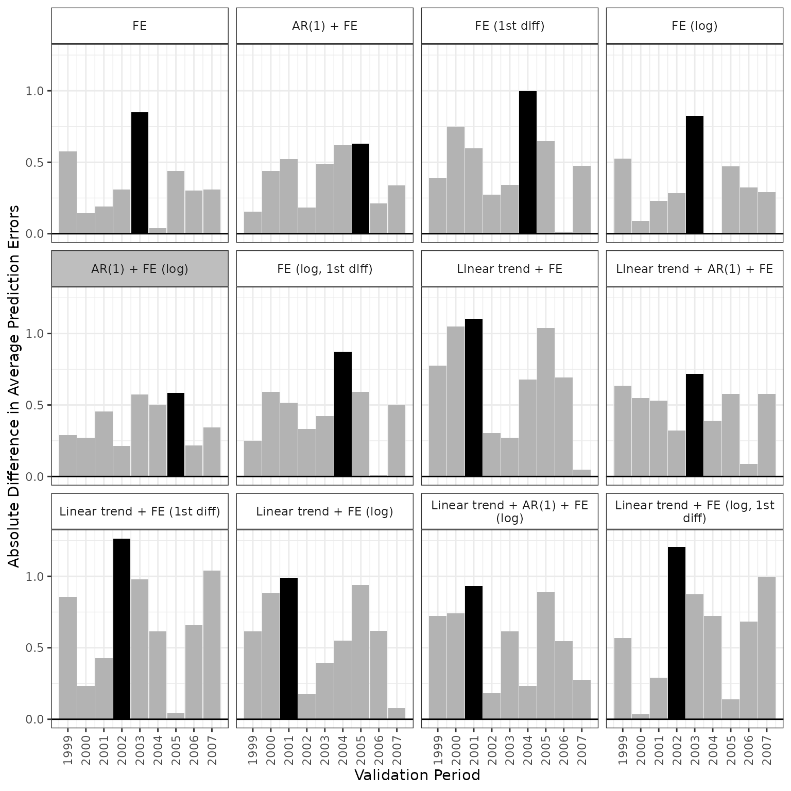

Introduction
The apm package implements Averaged Prediction
Models (APM), a Bayesian model averaging approach for controlled
pre-post designs. These designs compare differences over time between a
group that becomes exposed (treated group) and one that remains
unexposed (comparison group). With appropriate causal assumptions, they
can identify the causal effect of the exposure/treatment.
In APM, we specify a collection of models that predict untreated outcomes. Our causal identifying assumption is that the model’s prediction errors would be equal (in expectation) in the treated and comparison groups in the absence of the exposure. This is a generalization of familiar methods like Difference-in-Differences (DiD) and Comparative Interrupted Time Series (CITS).
Because many models may be plausible for this prediction task, we combine them using Bayesian model averaging. We weight each model by its robustness to violations of the causal assumption.
Methodology Overview
Our identification framework begins with prediction and correction steps. First, we train a model on pre-intervention data to predict untreated outcomes in the post-intervention period. Then, we correct the treated group’s predictions using the comparison group’s post-intervention prediction errors, which adjusts for shared time-varying shocks. The identifying assumption is that, without the policy change, prediction errors would be equal (in expectation) across treated and comparison groups.
We specify a collection of plausible models for this prediction task and compare across them using robustness to the causal assumption. Specifically, we quantify each model’s differential prediction errors (i.e., differences between the treated and untreated group’s prediction errors) during a series of pre-intervention validation periods. Taking the max as a summary across these periods, we consider models with smaller maximum differential prediction errors more robust.
Then we apply Bayesian model averaging (BMA), weighting each model by its posterior probability of being the most robust. Taking an “informal Bayesian approach”, we sample model parameters from a quasi-posterior (Gelman and Hill 2006, 140). This is a multivariate Normal distribution with mean equal to the estimated parameters of the fitted models and a variance-covariance matrix that incorporates across-model correlations. For each parameter draw, we compute the models’ differential prediction errors and take the max over the validation periods. Each model’s weight is the proportion of draws in which it minimizes the maximum differential prediction error (i.e., is most robust). Finally, using the corrected predictions from our averaged model, we estimate the average treatment effect on the treated (ATT).

For inference, we apply a fractional weighted bootstrap (Xu et al. 2020). It takes into account uncertainty about the models’ performance, but not the uncertainty in the BMA weights themselves, which would be computationally infeasible. Following Antonelli, Papadogeorgou, and Dominici (2022), we estimate overall variance as the sum of two components: (1) sampling variance with fixed model uncertainty and (2) model uncertainty variance with fixed sampling uncertainty.
Finally, we can also perform causal sensitivity analyses by scaling the models’ maximum differential prediction error in the validation periods by a factor . This enables sensitivity measures such as:
- constructing sensitivity bounds for a particular as in Manski and Pepper (2018) and Rambachan and Roth (2023)
- finding the value of that would reverse the sign of the causal effect
- finding the value of that would lead the confidence interval to include 0
The package implements the APM methods via three key functions:
apm_mod()constructs candidate models that can predict untreated outcomes in both treated and comparison groups.apm_pre()fits these candidate models to pre-treatment validation data and generates the BMA weights for each model.apm_est()estimates the ATT, given the BMA weights, and constructs both statistical and causal bounds around it.
Example: Estimating the Effect of Missouri’s Gun Policy Change
In this example, we apply APM to estimate the effect of Missouri’s 2007 repeal of its permit-to-purchase law on gun homicide rates (Webster, Crifasi, and Vernick 2014; Hasegawa, Webster, and Small 2019).
Load Example Data
The package provides an example dataset with pre- and post-policy homicide rates:
## state year deaths crude_rate age_adj_rate group treat
## 1 Arkansas 1994 205 8.2 8.2 0 0
## 2 Arkansas 1995 212 8.4 8.4 0 0
## 3 Arkansas 1996 164 6.4 6.4 0 0
## 4 Arkansas 1997 196 7.5 7.6 0 0
## 5 Arkansas 1998 155 5.9 6.0 0 0
## 6 Arkansas 1999 118 4.4 4.5 0 0The dataset includes:
state: State nameyear: Year of observationdeaths: The number of gun homicide deathscrude_rate: Gun homicide rate per 100,000age_adj_rate: Gun homicide rate per 100,000 adjusted for agegroup: Indicator for Missouri (1 = Missouri, 0 = comparison group)treat: Indicator for Missouri in post-treatment year (2008+) (1 = treated, 0 = untreated)
Note that observations with year == 2008 are the average
of a state’s observations over all post-treatment periods (2008 -
2016).
Define Candidate Models
APM supports a range of model options:
formula_list: list of model formulas with outcome on left-hand side and predictors on right-hand side, e.g.,formula_list = crude_rate ~ 1.family: list of family specifications passed tostats::glm()when fitting models inapm_pre();"negbin"can also be supplied to request negative binomial model with log link fit usingMASS::glm.nb(). To see list of family specifications, run?family.lag: vector of integers outcome lags to be used as predictors. For example,lag = 3means to include lag-1, lag-2, and lag-3 outcomes as predictors. Default is 0 (for no lags).diff_k: vector of integers indicating outcome lags to be used as offsets. For example,diff_k = 1means prior time point’s outcome will be included as offset, equivalent to using the outcome minus its corresponding lag as the model’s outcome. Default is 0 for no lags. Any models with adiff_kvalue less than alagvalue are removed automatically. When used with a family with log link, lags are automatically log-transformed;apm_pre()will return an error if non-positive values are present in the outcome.log: logical vector indicating whether outcome should be log-transformed. Default isFALSEto use the original outcome. Whenlagordiff_kare greater than 0, outcome lags will also be log-transformed ifTRUE. When family has log link anddiff_kis greater than 0, lag in offset will be log transformed.time_trend: vector of integers indicating powers to be included in a time trend. For example,time_trend = 2means to include as predictors time variable and its square. A value of 0 (the default) means continuous time is not included as predictor.fixef: logical vector indicating whether to include unit fixed effects as predictors. Default isFALSE.
These lists of model options are combined factorially to create a collection of candidate models.
In this example, we specify two options for lags (no lag and lag-1), two options for outcome differences (no offset and immediate prior outcome), two options for the outcome scale (original and log transformed), and two options for time trends (no time trend and linear time trend), to get a set of candidate models:
models <- apm_mod(formula_list = crude_rate ~ 1,
family = "gaussian",
lag = 0:1,
diff_k = 0:1,
log = c(TRUE, FALSE),
time_trend = 0:1,
fixef = TRUE)This produces 12 candidate models, all of which use the
"gaussian" family (with an identity link function). This is
fewer than the full factorial combination because of the embedded logic
for combining outcome differences and lags (see above).
Fit Candidate Models to Pre-Treatment Data
We now fit all 12 models to pre-treatment data. For each model and
each pre-treatment validation period, we compute the observed difference
in average prediction errors between treated and comparison groups. From
these differences in average prediction errors, we compute the Bayesian
model averaging (BMA) weights that are eventually passed to
apm_est() for estimation of the average effect of treatment
on the treated (the ATT).
The function apm_pre() does the model fitting. It
requires a data frame that contains a group indicator variable and a
time variable. We specify 1999:2007 as the validation years
in which each model will be. Each validation year’s fit will be based on
all data prior to that year. Therefore, we set the first validation
period to 1999 so that even in the first validation year, we can train
the models on five years of data (i.e., 1994:1998). We
specify the number of quasi-posterior draws using the
nsim = 1000 argument; more draws gives a better
approximation to the model posterior, but can slow down the
computation.
# Set seed for reproducibility: ensures random sampling from
# multivariate Normal produces same results each time code is run
set.seed(098556947)
fits <- apm_pre(models = models,
data = ptpdata,
group_var = "group",
time_var = "year",
unit_var = "state",
val_times = 1999:2007,
nsim = 1000)We can view the largest average differential prediction error for
each model and the BMA weights given to each model using
summary() on the returned object:
summary(fits)## BMA weights Max|errors|
## FE 0.000 0.850
## AR(1) + FE 0.022 0.630
## FE (1st diff) 0.000 0.997
## FE (log) 0.000 0.826
## AR(1) + FE (log) 0.977 0.584 *
## FE (log, 1st diff) 0.000 0.874
## linear trend + FE 0.000 1.102
## linear trend + AR(1) + FE 0.001 0.719
## linear trend + FE (1st diff) 0.000 1.264
## linear trend + FE (log) 0.000 0.988
## linear trend + AR(1) + FE (log) 0.000 0.933
## linear trend + FE (log, 1st diff) 0.000 1.207
##
## Use `plot()` to plot prediction errors and BMA weights.We can plot the simulation-based posterior distribution of which model is most robust. The probabilities are the proportions of simulations in which each model is the winner.
plot(fits, type = "weights")Bayesian Model Averaging (BMA) Weights for Model Selection.
We can see the differential prediction errors in each model and year. Here, the winning model is highlighted: it is the model that includes a lag-1 outcome as a predictor and log-transforms the outcome. The maximum differential prediction error was observed in 2005.
plot(fits, type = "errors")
The plot below shows the predictions from this model in each validation period. The observed outcomes are displayed as points and the predicted outcomes as lines.
plot(fits, type = "predict")Finally, we can also show the winning model’s corrected predictions,
that is, after incorporating the prediction error in the control group
To observe the corrected predictions, we can set
type = "corrected", which is the prediction for the treated
group, corrected for the comparison group’s prediction error.
plot(fits, type = "corrected")Estimation and Inference
To estimate the ATT and conduct inference, we feed the output of a
call to apm_pre() into apm_est(). The
M argument is the sensitivity parameter for set
identification, which by default is set to M = 0. When
M is set to a value greater than 0, apm_est()
will return estimates of the lower and upper bounds of the ATT. These
bounds can incorporate both the uncertainty due to possible causal
violations and sampling uncertainty. The R argument is the
number of bootstrap iterations used to estimate the sampling variance,
holding model uncertainty fixed.
est <- apm_est(fits = fits,
post_time = 2008,
M = 1,
R = 1000,
all_models = TRUE)To examine the estimates and uncertainty bounds, we run the
following. The level = 0.95 argument specifies the
statistical confidence level; to ignore sampling uncertainty, set
level = 0.
summary(est, level = 0.95)## Estimate Std. Error CI low CI high z_value Pr(>|z|)
## ATT 1.1414 0.1226 0.9011 1.3817 9.31 <2e-16 ***
## M = 1 . . 0.1367 2.0099 . .
## ---
## Signif. codes: 0 '***' 0.001 '**' 0.01 '*' 0.05 '.' 0.1 ' ' 1The standard error is the square root of the sum of two variances:
(1) the estimated sampling variance holding model uncertainty fixed and
(2) estimated model uncertainty variance holding the sampling
uncertainty fixed. For the ATT row, the CI low
and CI high outputs are the lower and upper confidence
bounds for the ATT. The CI low output for the
M = 1 row is the lower confidence bound of the ATT’s lower
sensitivity bound. The CI high output for the
M = 1 row is the upper confidence bound of the ATT’s upper
sensitivity bound.
The figure below shows the estimated ATT under each model plotted against the maximum absolute difference in average prediction errors for that model. The model with the smallest maximum absolute difference in average prediction errors is displayed in red. The size of the points correspond to the BMA weights.
Small variation in the ATT estimates (y axis) across values of maximum absolute differences in prediction errors (x axis) suggests that we do not face a stark trade-off between model plausibility and robustness.
plot(est)Sensitivity Analysis
We can also apply a sensitivity analysis to increasing values of
M. For example, below we estimate the ATT’s bounds under
values of M from 1 to 2 in increments of 0.25.
## Estimate Std. Error CI low CI high z_value Pr(>|z|)
## ATT 1.1414 0.1226 0.9011 1.3817 9.31 <2e-16 ***
## M = 1 . . 0.1367 2.0099 . .
## M = 1.25 . . -0.0672 2.2014 . .
## M = 1.5 . . -0.2730 2.3991 . .
## M = 1.75 . . -0.4803 2.6009 . .
## M = 2 . . -0.6886 2.8054 . .
## ---
## Signif. codes: 0 '***' 0.001 '**' 0.01 '*' 0.05 '.' 0.1 ' ' 1This output shows that our 95% confidence interval for the ATT’s
lower bound excludes 0 when M = 1.25, but not when
M = 1.5. To find the exact changepoint value of
M, we can run the following.
robustness_bound(est, level = 0.95)## [1] 1.167954We can also run robustness_bound() when the level is
level = 0, which will give us the value of M
in which the sensitivity bound (not statistical confidence bounds) begin
to bracket 0.
robustness_bound(est, level = 0)## [1] 1.950976As we would expect, the changepoint value of M is
greater when level = 0.
Interpretation of Results
The BMA point estimate (M = 0) is 1.14, with a standard
error of 0.12, yielding a 95% confidence interval of [0.9, 1.38]. This
suggests that Missouri’s repeal of its permit-to-purchase law increased
the state’s gun homicide rate by 0.9 to 1.38 per 100,000 people. Given
Missouri’s 2007 homicide rate of 4.5 per 100,000 people, the estimated
increase of 1.14 represents a 25% rise. The changepoint value of M for
the BMA estimator is 1.95. That is, if differential prediction errors
were nearly twice what were seen in the validation periods, the point
estimate would no longer indicate an increase in the gun homicide rate.
Additionally, the lower bound estimator’s 95% confidence interval
includes zero when M reaches 1.17. That is, at this multiplier of the
differential prediction errors seen in the validation period, our
statistical uncertainty bounds around the effect estimate would begin to
include 0.
Conclusion
The apm R package implements Averaged Prediction Models
(APM), a unified framework for causal inference in controlled pre-post
settings. APM generalizes a broad class of prediction-based methods by
combining outcome prediction with error correction using a comparison
group. The package also incorporates Bayesian Model Averaging to select
the most robust model based on pre-period data.
Through an application to Missouri’s 2007 permit-to-purchase law repeal, our results suggest that a lagged dependent variable model with unit fixed effects on the log scale was the most robust choice, leading to an estimated increase of 1.14 homicides per 100,000 people. Sensitivity analysis indicates that for the estimated effect to be indistinguishable from zero, assumption violations would need to exceed 1.95 times the worst pre-period discrepancies, compared to as low as 0.79 under single-model approaches.
Built on a unified identification framework, APM offers a flexible,
data-driven approach to causal inference in controlled pre-post
settings. The apm package prioritizes model averaging and
robustness over assuming a single “correct” model while efficiently
accounting for both sampling and model uncertainty. This ensures that
researchers can achieve greater flexibility in model selection while
maintaining rigorous and principled inference.
For more details, see: